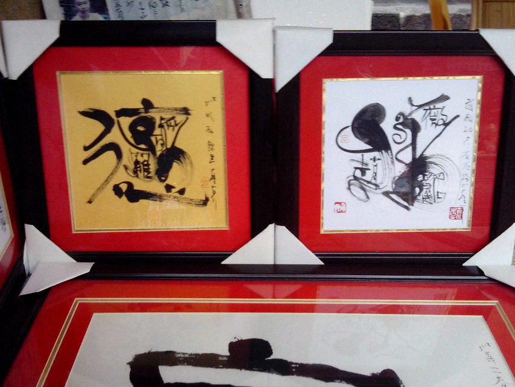

毛笔书法
毛笔书法是中国特有的一种传统艺术。古往今来，中国汉字是劳动人民创造的，开始以图画形式表示文字，经过几千年的发展，演变成了当今的文字，古代长期用毛笔写字，便产生了书法。均以毛笔书写汉字为主，至于其他书写形式，其书写规律与毛笔书写规律相比，并非迥然不同，而是基本相通。这里重点介绍毛笔书法。
毛笔书法现在一共有六种书体，即行书体、草书体、隶书体、篆书体、楷书体和马书体六种书体书法。
毛笔书法是中国特有的一种传统艺术。古往今来，中国汉字是劳动人民创造的，开始以图画形式表示文字，经过几千年的发展，演变成了当今的文字，古代长期用毛笔写字，便产生了书法。均以毛笔书写汉字为主，至于其他书写形式，其书写规律与毛笔书写规律相比，并非迥然不同，而是基本相通。这里重点介绍毛笔书法。
毛笔书法现在一共有六种书体，即行书体、草书体、隶书体、篆书体、楷书体和马书体六种书体书法。